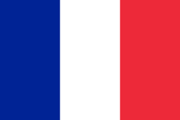
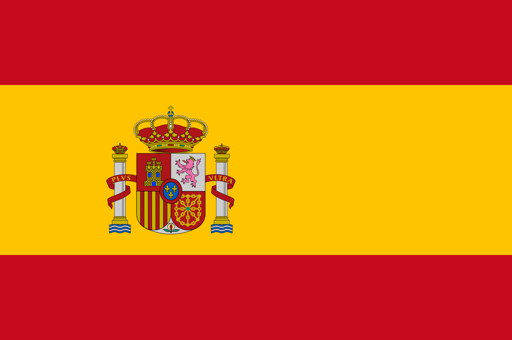
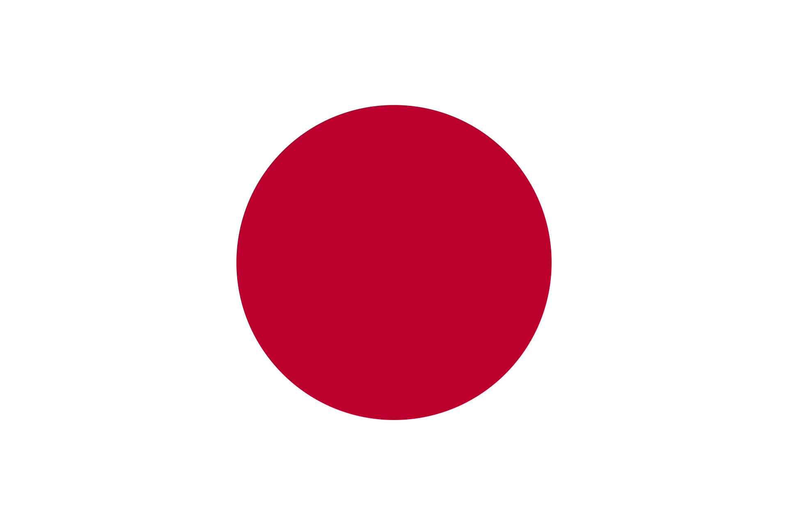
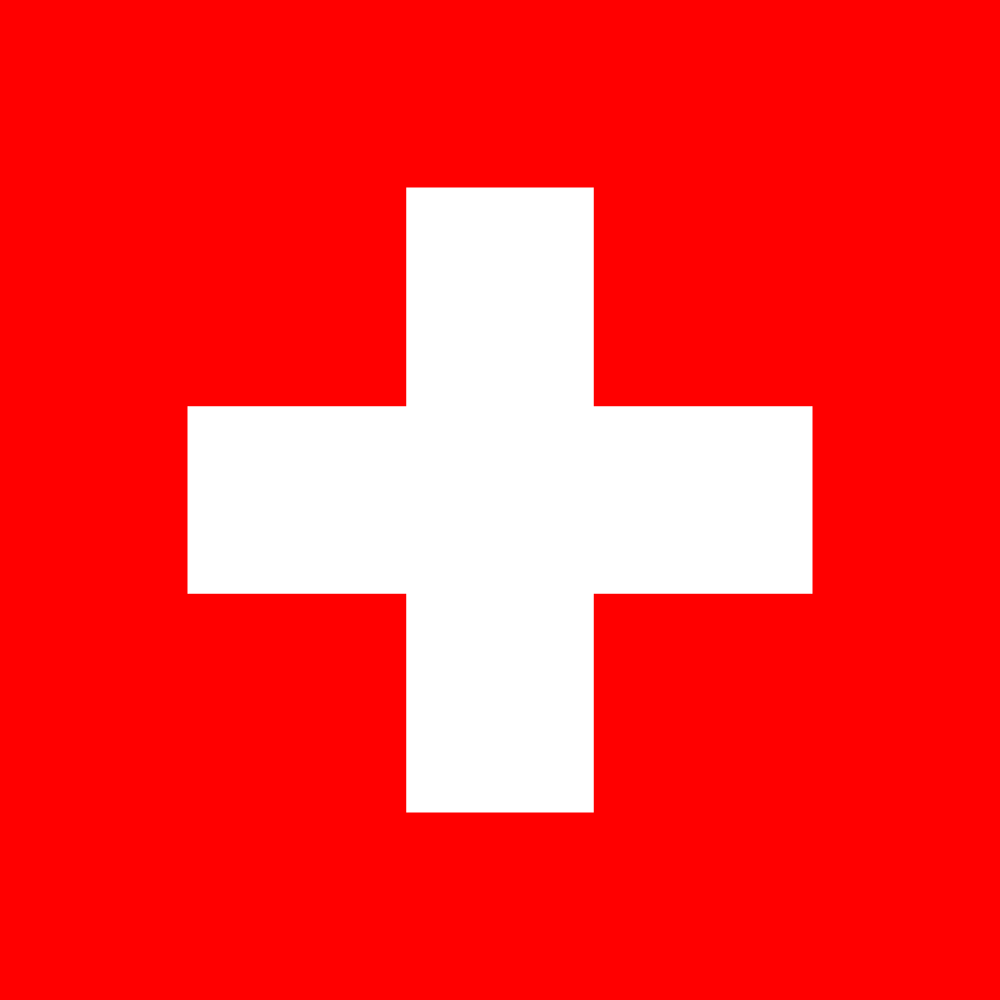
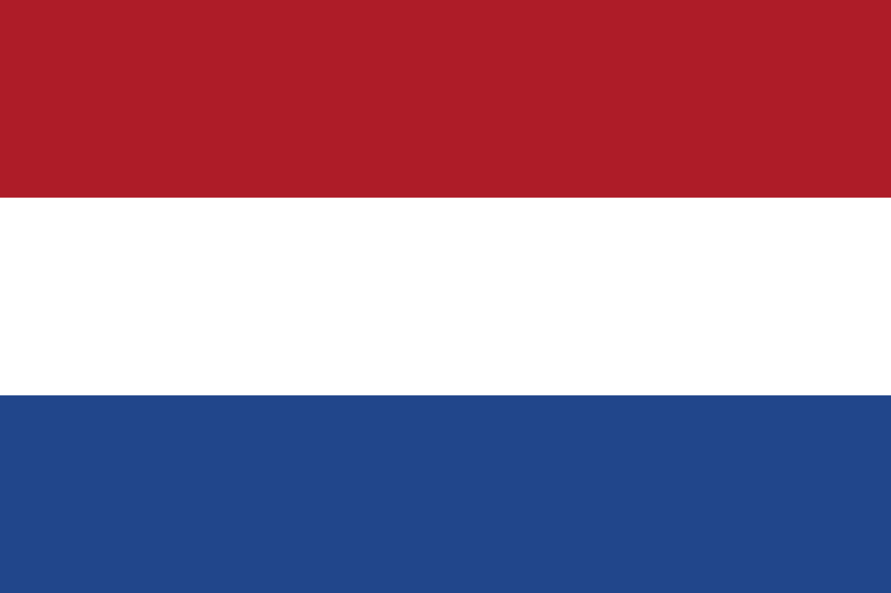

Athlète Francais
Né le 27 juin 1989
Détenteur d'un record mondial de Triathlon

retour
Athlète Francais
Né le 27 juin 1989
Détenteur d'un record mondial de Triathlon
A la base nageur, Vincent suivait les pas de sa soeur avant de commencer le triathlon dans le club de sa ville, de 2001 à 2008.
Il aura la chance de participer aux Jeux Olympiques de Londres en 2012, où il ne remportera aucun titre.
| épreuve | temps | lieu | année |
|---|---|---|---|
| Coupe du monde | 48min 18s | 2018 | |
| Grand Prix de triathlon | 54min 30s |  | 2018 |
| Championnat de France courte distance | 54min 52s | 2018 | |
| WTC Gold Coast | 1h 44min 34s | 2018 | |
| Coupe du monde | 49min 58s |  | 2019 |
| WTS Yokohama | 1h 43min 24s |  | 2019 |
| épreuve | temps | lieu | année |
|---|---|---|---|
| Coupe d'Europe | 2h 0min 26s |  | 2010 |
| Coupe d'Europe | 1h 53min 23s | 2011 | |
| Championnat de France | 56min 9s | 2018 | |
| WTS Hambourg | 51min 54s | 2015 | |
| Grand Prix de triathlon | 53min 33s | 2016 | |
| Championnats d'Europe de triathlon sprint | 50min 59s | 2016 | |
| Grand Prix de triathlon | 52min 23s | 2017 | |
| Grand Prix de triathlon | 52min 55s | 2017 | |
| WTS Rotterdam | 1h 51min 26s |  | 2017 |
A Lausanne cet été 2019
Une belle journée d'Août aura été le cadre pour le sacre d'un francais devenu le record mondial de Triathlon